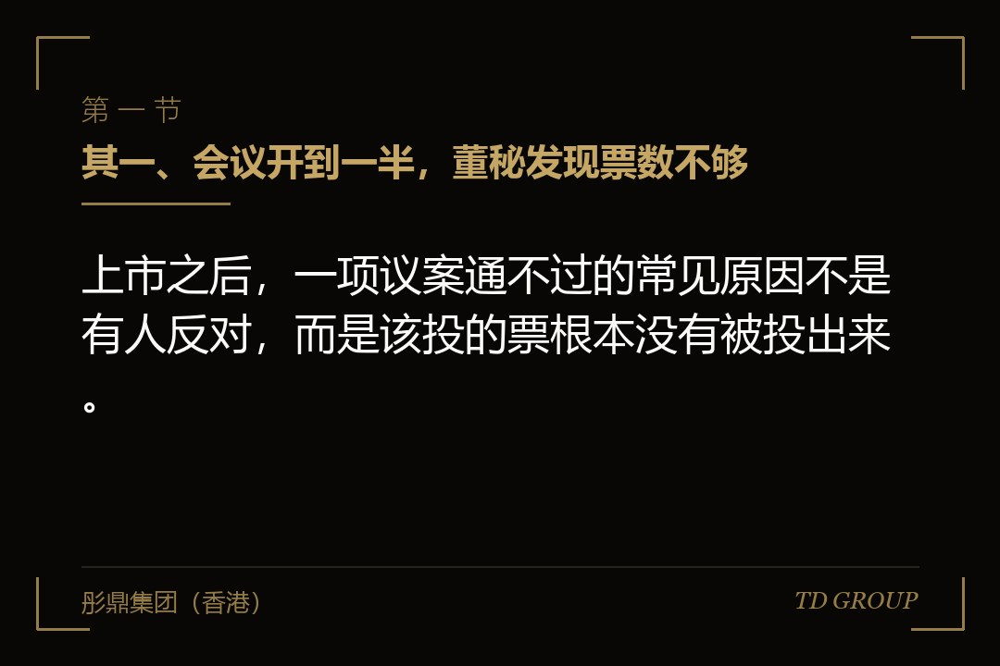
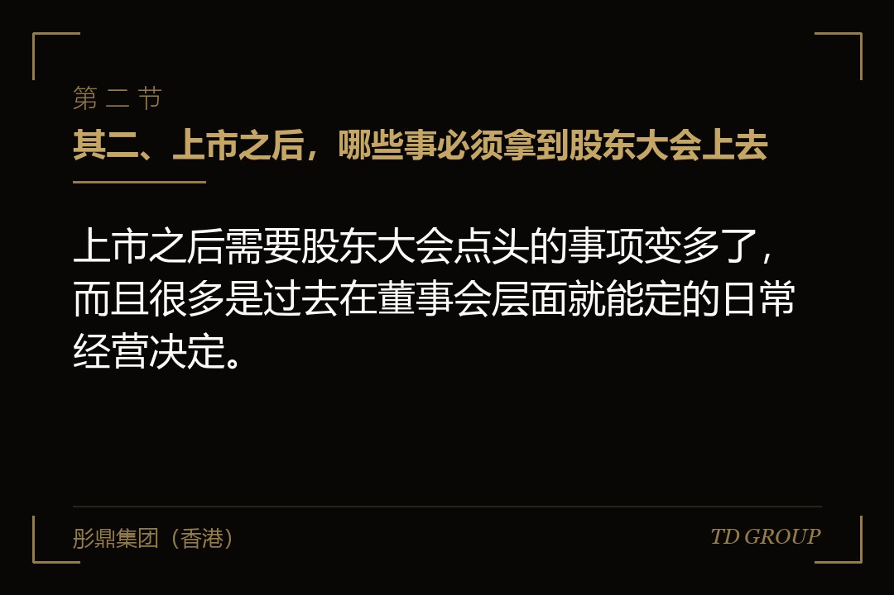
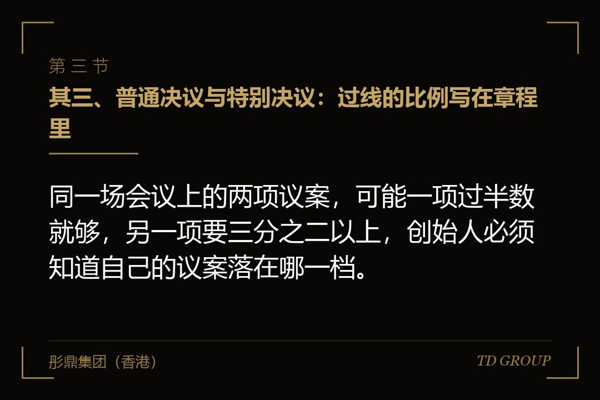

其一、会议开到一半，董秘发现票数不够

结论先行：上市之后，一项议案通不过的常见原因不是有人反对，而是该投的票根本没有被投出来。
假设有家在境外上市不久的智能装备公司，上市当年要开年度股东大会，议案里有两项：续聘会计师事务所，以及修改章程中关于董事人数上限的条款。
创始人一方持有约百分之四十，团队和早期投资人合计约百分之十五。按会前的估算，续聘那一项稳过，修章程那一项也应该没问题。
会议当天，实际参与表决的股份只有总股本的百分之五十五出头。续聘那一项以微弱优势通过，修章程那一项需要三分之二以上赞成，按出席股份计算差了一小截，当场未获通过。
会后复盘才发现问题出在两处：一是分散在外的个人持有人那一部分，几乎没有回收到投票指示；二是通过经纪商持有的那部分股份，在没有收到客户指示的情况下，对修章程这类事项没有被投出赞成票。
创始人当时的原话是"我持股最多，怎么反而是我通不过议案"。持股比例和到场票数是两个数，上市之后这两个数的差距会被放大到他从未见过的程度。
其二、上市之后，哪些事必须拿到股东大会上去

结论先行：上市之后需要股东大会点头的事项变多了，而且很多是过去在董事会层面就能定的日常经营决定。
大致可以分成三类。类型一是章程与股本层面的事：修改章程、增加或者调整法定股本、变更公司名称、批准股份的分拆或者合并。
类型二是人事与监督层面的事：董事的选举与罢免、审计机构的聘任与更换、以及董事薪酬政策在部分司法辖区的批准。
类型三是与股东利益直接相关的重大交易：达到一定规模的资产处置或者收购、以及为发行新股取得的一般性授权。这一类的具体标准由注册地公司法与上市地规则共同决定。
需要提醒的是，一般性授权这一项对创始人特别重要。有了它，董事会在授权范围内发行新股不必每次再开股东大会；没有它，每一次融资都要重新召集一次会议，而召集一次会议要按月计。
所以上市之后的会议议程不是被动写出来的，而是要按未来十二个月可能发生的事倒推出来的。该在这次会上一并取得的授权没取得，代价会在半年后以时间的形式出现。
其三、普通决议与特别决议：过线的比例写在章程里

结论先行：同一场会议上的两项议案，可能一项过半数就够，另一项要三分之二以上，创始人必须知道自己的议案落在哪一档。
普通决议是默认档。多数章程规定，出席会议并有表决权的股份中，赞成票超过半数即为通过。日常事项、董事选举、聘任审计机构通常走这一档。
特别决议是加强档。注册于开曼群岛等地的公司，章程通常要求赞成票达到出席并有表决权股份的三分之二以上；也有章程把门槛写得更高。修改章程、变更名称、减少股本这一类事项走这一档。
这里有一个极易被忽略的技术细节：门槛算的是"出席并有表决权的股份"，不是全部已发行股份。这意味着到场率越低，剩下的票权重越大，少数反对者的影响力被放大。
反过来说也成立：如果创始人一方的票能稳定到场，而其他部分到场率低，创始人在特别决议上的实际控制力会高于其持股比例。这个机制对双方都是中性的，看谁把票组织起来。
另外，章程里可能对特定事项另有更高要求，比如涉及关联方的交易要求排除关联股东后计票。这一类条款在上市前定章程的时候写下，往往要等到上市之后开头几次会议才真正被用上一回。
其四、法定人数：会开不成，比议案被否更麻烦
结论先行：法定人数是会议能否成立的前提，人数不够时议案连表决的机会都没有，整场会议要重新召集。
法定人数由章程规定，常见的写法是持有一定比例已发行有表决权股份的股东亲自或者委托出席。有些章程写的是两名股东即可，有些写的是达到某个持股比例。
对刚上市的公司来说，这一条要提前算。持股高度分散、机构持有比例低的公司，在会议成立这一关上比在表决那一关上更容易出事。
章程通常还会规定人数不足时的处理：会议延期到下一个约定时间重开，重开的会议在法定人数上可能有放宽的安排。这一段写法各家不同，董秘要在发通知之前把它读一遍。
比人数不足更麻烦的是它的连锁后果。年度股东大会需要在会计年度结束后的规定期限内召开，会议开不成会牵动年报的相关安排；审计机构续聘的议案没能表决，审计工作的委任依据也会跟着悬着。
因此把法定人数当成一个需要提前锁定的数，比开会当天临时找人签委托书要省事得多。锁定的方法通常是提前与主要股东逐一确认，并把委托出席的文件模板提前发出去。
其五、票在谁手里：存托凭证那一层要单独算
结论先行：以存托凭证形式交易的公司，登记在册的股东是存托机构，实际持有人的意见要通过投票指示一层一层传上来。
这一层是境外上市公司特有的，也是创始人最陌生的。在股东名册上，持有大量股份的那个名字往往是存托银行，而不是任何一位真实的投资人。
存托机构会把会议材料与投票指示卡分发给存托凭证的持有人，收集指示后按指示投票。指示要在截止日之前收到，晚一天就不计入。
问题出在没有收到指示的那部分。存托协议里通常对这种情形有约定，具体处理方式各家协议不同，有的按约定授权给公司指定的人代为表决，有的则不投。这几行字决定了一大块票的去向，董秘要能背下来。
还有一段时间差要算：从公司确定股权登记日、到存托机构完成分发、到持有人回复、再到存托机构汇总投票，整条链条比境内直接持股要长得多。留给征集的实际窗口比想象中短。
所以对这类公司来说，会前工作的核心不是写好议案说明，而是把这条链条上每一段的截止日排出来，逐段确认材料真的送到了下一环。
其六、经纪商代投与"没有指示的票"：一个常被忽略的变量
结论先行：通过经纪商代为持有的那部分股份，在没有客户指示的时候能不能被投出去，取决于议案属于哪一类，这会直接改变分母和分子。
境外市场上，大量个人持有人的股份登记在经纪商名下。经纪商在向客户征集投票指示后代为投票，这是常规安排。
关键在于没有收到客户指示的那部分。市场惯例与相关规则把议案区分为常规事项与非常规事项：常规事项经纪商在无指示时通常仍可代为投票，而涉及公司治理结构变化、董事选举这一类事项，无指示时不投。
这就是开头那家公司栽的地方。续聘审计机构属于前一类，票凑得出来；修改章程属于后一类，无指示的票全部作废，分子一下就不够了。
对董秘来说，这条规则的实用含义是：凡是需要特别决议的议案，都要按"经纪商那一层的票大概率投不出来"来做预案，把征集工作提前而不是加大会议当天的力气。
常见的做法有三样：提前与持股较大的机构逐一沟通并留出他们内部投票流程所需的时间；把议案说明写得让不熟悉公司的人也读得懂；以及在必要时聘请专业机构协助征集。这三样都要花时间，不是开会前一周能补的。
其七、议案没过之后，会连锁地碰上什么
结论先行：一项议案被否或者未获通过，麻烦不止于这件事本身，它会顺着公司治理的链条牵出好几件。
头一层是这件事本身要重来。重新召集一次会议要按章程的通知期从头走一遍，加上材料准备与征集，通常又是一两个月。
第二层是与之绑定的安排跟着悬空。比如修改章程未通过，原本依赖新章程条款的董事会调整、股权激励计划的额度调整就都停在原地。
第三层是外部解读。上市公司的会议结果是要按规则对外披露的，一项议案未获通过会被外界读出治理层面的信号，公司需要准备一致的对外口径与后续安排说明。
第四层是内部信心。团队和核心员工会从中读出创始人对公司的掌控程度，这一层不体现在任何文件里，但影响持续时间最长。
我们跟华尔街俱乐部有合作，见过的案例多一些，几家在头一年吃过这个亏的公司，后来的做法出奇一致：把股东大会当成一个需要提前六十天启动的项目来管，而不是当成一场要走的程序。
其八、收口：开会之前要确认的七件事
结论先行：这七件事在发出会议通知之前逐条确认，多数票数问题会在会前暴露；发完通知再确认，就只剩补救。
其一，把公司章程里关于通知期、法定人数、普通决议与特别决议门槛的那几条原文抄出来，逐条对着这次的议案看落在哪一档。
其二，把本次议案按普通决议与特别决议分类，并标出哪几项在无指示时经纪商不能代投，这几项就是要重点征集的对象。
其三，算出股权登记日，并从登记日倒推存托机构分发与回收指示的每一个截止日，确认整条链条排得下。
其四，列出持股比例较高的机构股东名单，逐一确认他们内部的投票决策需要多长时间、需要公司提供什么材料。
其五，估一个到场率，用它去反算特别决议需要多少赞成票，看创始人一方与已确认支持的股东加起来够不够。
其六，把未来十二个月可能需要股东大会批准的事项列出来，看有哪几项可以并进本次议程，避免半年后再召集一次。
其七，为每一项议案准备一份被否之后的处置说明，包括对外口径、后续时间表以及替代方案，这份东西写完就锁进抽屉，能一直用不上是再好不过的结果。
因此，上市之后的股东大会不是一场仪式，而是一次要按项目去管的票数组织工作。关键在于把工作前移：门槛写在章程里，票分散在几层持有结构里，这两件事在开会当天都改不动，能改的只有提前多少天开始动手。